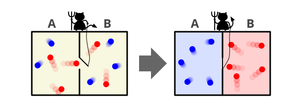
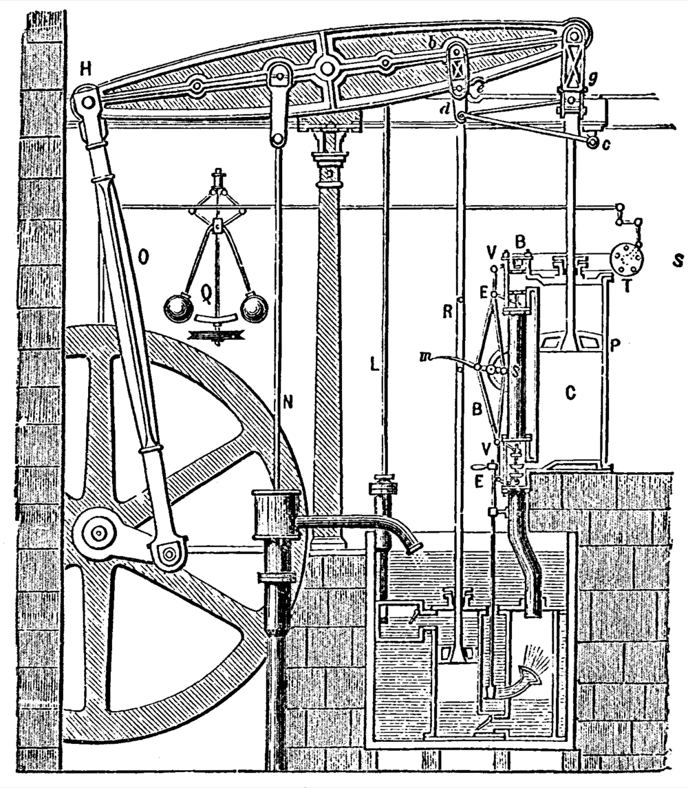
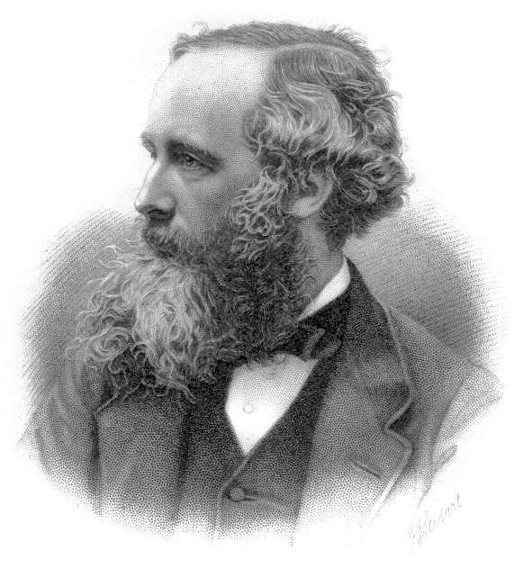

Special Report — Information & Thermodynamics
100年以上、第二法則を脅かしてきた思考実験。決着は「忘れることに、熱がいる」という奇妙な発見だった。
12月11日、マクスウェルがピーター・ガスリー・テイト宛の手紙で「分子を選り分ける有限の存在」という思考実験を提案。
同年、マルクス『資本論』第1巻刊行。ロシアからアラスカ買収($7.2M)。カナダ自治領成立。日本では大政奉還。
この記事の体験は 3フェーズ構成。あなた自身が悪魔になり、稼いだ仕事と、忘れるために払う熱を、目で確かめる。
冷蔵庫から取り出した氷は、必ず溶ける。逆向きに、机の上の水たまりが勝手に氷に戻ったところを、私は一度も見たことがない。
お湯は冷め、ガラスは割れたら戻らず、本のページは黄ばみ、人は歳を取る。物理法則のほとんどは時間を反転させても成り立つのに、この一点だけが違う。世界は片方向にしか進まない。
その「片方向」を物理学はエントロピーと呼ぶ。そして150年前、ある男がそれを破る方法を思いついた。
150年にわたり物理学を悩ませた思考実験を、自分の手で動かしてみる。悪魔のメモリが満杯になった瞬間に何が起こるか、目で確かめる記事。
図1: どれも別々の現象に見えるが、「片方向にしか進まない」という共通の構造を持つ。物理学はこれを エントロピーが増える と呼ぶ。
これらすべてに共通するのは、放っておけば「乱雑さ」「混ざり具合」が増える方向にしか進まない、という点だ。物理学はこの乱雑さをエントロピーエントロピー系の「乱雑さ」を測る量。整列・分離した状態は低く、混ざり合ってバラバラな状態は高い。単位はジュール毎ケルビン(J/K)。と呼び、孤立した系孤立した系外部とエネルギーや物質をやりとりしない、閉じた範囲のこと。「この箱の中だけ」と切り取って考える、物理学の標準的な設定。のエントロピーは時間とともに増えるか、せいぜい変わらないだけで、決して減らない、と定式化した。これが熱力学第二法則熱力学第二法則孤立した系のエントロピー(乱雑さ)は時間とともに増えるか、変わらないかのどちらかで、決して減らないという法則。19世紀半ばに確立。である。エネルギー保存則と並ぶ、近代物理学の二本柱の一本だ。
広がったインクが、自分からふたたび一滴に戻ることはない。エントロピーの増大とは、こういう一方向性のことだ。
1867年12月11日、35歳のジェイムズ・クラーク・マクスウェルは、友人ピーター・ガスリー・テイトに一通の手紙を書いた。テイトが熱力学の教科書を準備しているのを知り、彼はこう書き出した。「第二法則に小さな穴を開けてみよう」。
提案された思考実験を理解するために、ひとつ前提を共有しておく。私たちが「温度」と呼んでいるものは、ミクロには分子の動きの速さのことだ。お湯の中では水分子が激しく飛び回り、冷たい水の中では同じ分子がゆっくり動いている。同じ集まりでも、平均して速く動いていれば温度が高く、ゆっくりなら温度が低い。これは19世紀半ばに確立した、ボルツマンらによる気体分子運動論の中核アイデアである。
手紙のなかでマクスウェルが提案したのは、後に「マクスウェルの悪魔」として知られることになる、物理学史上もっとも有名な思考実験のひとつだった。気体の入った箱を仕切りで二つに分け、仕切りの中央に小さな穴を空ける。穴のところには『悪魔』がいて、近づいてくる分子の速度を見分け、速い分子だけを片方の部屋に通し、遅い分子だけをもう片方に通す。すると、速い分子ばかりが集まった部屋は熱くなり、遅い分子ばかりの部屋は冷たくなる ―― エネルギーを一切加えていないのに、温度差が生まれる。

図2: マクスウェルの悪魔の古典的な図解。中央のドアを操る存在が、速い分子(赤)と遅い分子(青)を選り分けることで、エネルギーを加えずに片方を熱く、片方を冷たくする。
Diagram: Htkym (CC BY 2.5)
念のため断っておくと、マクスウェル本人はこの存在を「悪魔」とは呼ばず、「有限の存在(a finite being)」と書いた。敬虔なキリスト教徒であった彼が生涯この言葉を口にしなかったのには、信仰の手前もあったかもしれない。「悪魔(demon)」と名付けたのは、7年後の1874年にウィリアム・トムソン(ケルビン卿)で、以後そちらが定着した。本記事もそれに倣う。
ここで「だから何?」と思うかもしれない。だが、温度差というのは仕事(エネルギー)の元手だ。蒸気機関や火力発電所は、まさに温度差から動力を取り出す装置である。つまり悪魔の装置は、エネルギーを何も入力せずに、永遠に動力を取り続けられる ―― いわゆる「第二種永久機関」(エネルギー保存則は破らないが、ありふれた熱を100%仕事に変えてしまうため、第二法則だけを破る架空の装置)になる。これは熱力学第二法則の明白な違反だ。マクスウェルが見つけた『穴』の正体は、これだった。

図3: 1784年に Boulton と Watt が設計した蒸気機関の構造図(部品ラベル付き)。蒸気の高温源と外気の低温源、その温度差から動力を取り出す ―― マクスウェルの時代、これが世界を動かしていた装置の正体だった。
Plate from R. H. Thurston, A History of the Growth of the Steam Engine, D. Appleton, 1878. Public Domain.
ただし、ひとつ大事な但し書きを。これを理解するには当時の時代背景を共有しておく必要がある。マクスウェルが生きた19世紀半ばは、物理法則を「神が宇宙に与えた絶対のルール」とみなす考え方が、まだ強く残っていた時代だった。ニュートン以来、自然の法則は人間の都合や認識とは無関係に成り立つ宇宙の鉄則だ ―― そう信じられていた。エネルギー保存則も、当時新しく確立されたばかりだった熱力学第二法則も、その絶対のルールのひとつとして扱われていた。
そんな空気のなかで、マクスウェルが提示したのは「本当にそうか?」という問いだった。彼は本気で第二法則を破ろうとしたわけではない。彼が訴えたかったのはこうだ ―― 「第二法則は神の鉄則ではなく、もっと脆い性質のものではないか。マクロな世界では確かに成り立つが、原理的には、分子1個1個を見分けられる存在がいたら破れてしまう。つまりこの法則の正体は、絶対の掟ではなく、統計的な約束事なのではないか」。物理法則を神聖視するのではなく、その成り立ちそのものを問い直す挑戦状として、この思考実験は書かれた。
実際にこの『悪魔』を作る術はない ―― が、原理的に作れたとしたら破れる。その形で、マクスウェルは第二法則の本質を炙り出そうとした。この問題提起は的確で、後の統計力学(分子レベルの確率で熱現象を説明する分野、ボルツマンらが発展させた)を準備することになった。ただし、彼の予想の半分は外れることになる ―― それを実証するのに、150年かかる。本記事の残りは、その150年の物語だ。
ひとつだけ、あとで効いてくる事実をここで指摘しておく。この「見分けて、判断して、開ける」という動作には、悪魔が見たことを一瞬でも「覚える」こと ―― つまり、どこかに記録すること ―― が必然的に伴う。何も覚えずに判断はできないからだ。記憶については、このあと体験パートと、その仕組みの解説の章で、もう一度立ち返ってくる。
"…if we conceive a being whose faculties are so sharpened that he can follow every molecule in its course, such a being… would be able to do what is at present impossible to us."
…もし、すべての分子を一個ずつ追えるほど鋭い能力を持つ存在を考えるなら、そのような存在は、我々には現在不可能なことを実現できるだろう。
— J. C. Maxwell『Theory of Heat』(1872) 第12章
よくある誤解
マクスウェルの悪魔は、第二法則の「反例」として知られている。実際にこの装置を作れば、エネルギーなしで温度差を生み出せる。
実際は
第二法則は破れない。ただし「破れない理由」は、悪魔の仕分け作業ではなく、悪魔のメモリにあった。忘れることに、必ず熱がかかる。
よくある誤解
悪魔の問題は19世紀の古い話で、もう解決済み。現代の物理学とは関係ない。
実際は
2012年、フランスのチームが顕微鏡下のシリカ粒子で「忘れるコスト」を初めて実測した。論文はNatureに載り、いまも引用が伸び続けている。
この章では4人の人物に、悪魔をめぐる150年を案内してもらう。一人目はマクスウェル、二人目はそれを定量化したシラード、三人目は答えを出したランダウアー、そして四人目はとどめを刺したベネットである。

James Clerk Maxwell (1831–1879)
提案者 — 1867
スコットランドの物理学者。電磁気の方程式に名を残す巨匠。1867年、第二法則に「穴」を開ける思考実験を手紙で提案した。本人は最後まで「悪魔」とは呼ばず、「有限の存在」と書いた。
WikipediaLeo Szilard (1898–1964)
定量化 — 1929
ハンガリー生まれの物理学者。1929年の論文で、悪魔の問題を「1分子・1ビット」の極限まで単純化した。計測そのものにエネルギーがかかるはずだ ―― この一文が、情報と熱力学を結ぶ最初の橋になった。
WikipediaRolf Landauer (1927–1999)
原理 — 1961
ドイツ系アメリカ人物理学者、IBMIBM米国のコンピュータ企業。1950–90年代を通じてメインフレームから半導体まで業界をリードし、ワトソン研究所などから多くのノーベル賞・チューリング賞受賞者を輩出した。情報物理学・量子情報の歴史的な中心地のひとつ。研究員。1961年の論文「Irreversibility and Heat Generation in the Computing Process」で、1ビットの情報を消去するには最小 kT ln 2 の熱が必要という原理を導いた。情報そのものが物理量であることを示した。
WikipediaPhoto: AIP Emilio Segrè Visual Archives, Physics Today Collection
Charles H. Bennett (1943– )
決着 — 1982
IBM研究員、量子情報理論のパイオニア。1982年、悪魔の作業のなかで本当に不可逆なのは「計測」ではなく「メモリの消去」だ、と指摘した。これで悪魔の物語は、ようやく整合性のある結末を得た。
Wikipedia議論はここまでにする。手を動かす段に入る。これから3つのフェーズで、悪魔の仕事の全行程を体験してもらう。
フェーズ1では、あなたが悪魔として分子を仕分ける。フェーズ2では、仕分けた結果を記憶していくと何が起こるかを見る。フェーズ3で、稼いだ仕事と、忘れるために払う熱の帳尻を確かめる。
箱の中で赤い分子(高速)と青い分子(低速)が動いている。中央の壁に穴がある。穴のあたりに分子が来た瞬間、箱をクリックまたはタップするとドアが0.6秒だけ開く。赤を右、青を左に通せれば成功。30秒間でどれだけ仕分けられるか。
残り時間
30.0s
左の温度
—
右の温度
—
温度差 ΔT
0.00
クリック/タップでドアを一瞬開ける。
狙いは: 赤(高速) → 右 / 青(低速) → 左。
うまく仕分けられただろうか。30秒間に何度かはミスもあったはずだ ―― 赤を左に逃したり、青に開けてしまったり。それでも、温度計の針は、最初は同じ温度だった2つの箱が、徐々に「左が冷たく、右が温かい」方向に分かれていくのを見せてくれたはずである。
この温度差を作るのに、あなたは何の仕事もしていない。ドアの開閉に必要なエネルギーは、原理的にはゼロにできる(摩擦のない理想的な蝶番を考えればよい)。それでも温度差は生まれる。これが第二法則の「穴」だった。
…と、ここまでなら問題ない。問題は、あなたが「赤がドアに近づいた」「青がいま向こうから来る」という判断を、何かに記憶しなければならないことだ。脳でも、ノートでも、悪魔のメモリでも、なんでもいい。仕分けは、計測と判断と記憶が伴う。次のフェーズで、その記憶に何が起こるかを見る。
仕分けるたびに、悪魔は「いま左に通したか、右に通したか」を1ビットビット情報の最小単位。0か1の二択を表す。コンピュータの記憶装置はすべてビットの集まり。として記憶する。下の8つのマスはメモリだ。「1ビット書く」を押して埋めていくと何が起こるか。
使用ビット数
0 / 8
消去で出た熱
0.00 kT ln 2
8ビットを使い切ったら、次の仕分けはできない。続けるには、古い記録を消さなければならない。「1ビット消去」を押すと、ビットがリセットされる ―― そして、画面右下にkT ln 2 の熱が積み上がっていく。
これがランダウアー限界ランダウアー限界1ビットの情報を消去するために原理的に必要となる最小の熱量。kT ln 2 ≒ 室温で約 2.9 × 10⁻²¹ ジュール。Rolf Landauer が1961年に導いた。である。1961年、ランダウアーがIBMの論文で導いた。ボルツマン定数ボルツマン定数 k温度とエネルギーをつなぐ自然定数。k ≒ 1.38 × 10⁻²³ J/K。マクロな熱とミクロな分子運動の橋渡し。 k に温度 T をかけ、ln 2 (≒0.693)を掛けたもの。室温(T=300K)では、1ビット消去あたり約 2.9 × 10⁻²¹ ジュール。途方もなく小さいが、ゼロではない。
どれくらい小さいか。比較すれば、室温で空気分子1個がもっている平均的な運動エネルギー(ざっと 6 × 10⁻²¹ ジュール)の、ちょうど半分くらい。空気分子1個分の「ひと揺らぎ」と同程度の熱が、1ビット消すごとに必ず外に逃げる。日常の感覚ではゼロにしか見えない量だが、物理学的には測定可能な、実在する量である。
これは「確かめるための道具」だ。3本のスライダーを動かしてみてほしい。温度 T、仕分けたビット数 N、そして消去の粗さ ε(0 = 完全可逆な理想極限、上げるほど現実の消去で余分に出る熱)をどう変えても、緑(悪魔の稼ぎ)と赤(消去で出る熱)のバーは必ずぴったり同じか、赤のほうが大きい。第二法則は、どんな条件でも抜け道なしに守られている。それを目で確かめるためだけに、ここのスライダーは存在する。
スライダーをどう動かしても、緑(稼ぎ)と赤(消去熱)はぴったり同じ(ε=0、完全可逆な極限)か、赤の方が大きい(ε>0、現実の消去)。「正味の取り分はゼロ以下」という結論しか出ない。これが結末である。悪魔は分子を選り分けることはできる。だが、選り分けた記録を忘れるたびに、少なくとも同じだけの熱を環境に返さないといけない。
不思議なのは、この帳尻合わせが「計算機」の話と完全に同じ構造をしていることだ。あなたのスマホがメモリを消去するたびに、原理的にはランダウアー限界の熱が放出されている。実際の半導体チップはこの限界より数千〜数万倍ほど多い熱を出してしまっているが、原理上の下限は決まっている。情報を忘れることは、物理現象である。
ランダウアーの議論は、信じがたいほど単純である。1ビットのメモリとは、2つの状態(0か1)を区別できる物理装置だ。仮にそれを箱に入った1個の分子で表すとしよう ―― 左にいれば「0」、右にいれば「1」。
図4: 消去とは「2つの状態を1つに集約する操作」。ミクロな状態数が半分になる = エントロピーが k ln 2 だけ減る。減った分は、必ずどこかに熱として捨てるしかない。
「消去する」とは、書かれているのが0でも1でも、操作後は必ず「0」になっている状態にする、という意味だ。あえて初期状態に依存しない、と言ってもいい。コンピュータの「ゼロクリア」と同じである。
ここがミソ。消去前は分子は左にいるか右にいるか分からない(2つの状態が等確率)。消去後は必ず左にいる(1つの状態)。状態の数が2 → 1に減る。
ここで使うのが、ボルツマンが1870年代に導いたS = k ln W(S はエントロピー、k はボルツマン定数ボルツマン定数 k温度とエネルギーをつなぐ自然定数。k ≒ 1.38 × 10⁻²³ J/K。マクロな熱とミクロな分子運動の橋渡し。、W はその系が取れる状態の数、ln は自然対数自然対数(ln)ネイピア数 e (≒ 2.718) を底とする対数。ln 2 ≒ 0.693。物理学・情報理論で「対数」といえば普通こちらを指す。教科書によっては log と書く流儀もあるが、底は e で同じ。)という公式だ ―― エントロピーは、その系が取れる「状態の数」の対数で決まる。状態数が 2 から 1 に減れば、エントロピーは k ln 2 − k ln 1 = k ln 2 だけ減る。ln 2 ≒ 0.693。覚える必要はない、状態が半分になる時のエントロピー減少量を表す数と思っておけばよい。
分子1個のエントロピーが減ったということは、同じだけのエントロピーがどこかで増えなければならない ―― これが第二法則だ。減った分のエントロピー(k ln 2)に温度 T をかけたものが、環境に流れ出る熱になる。kT ln 2。これだけ。
図5: 1982年にベネットが整理した4ステップ。①〜③は原理的に可逆にできるが、④の消去だけは熱を吐き出さずには成立しない。第二法則を守っているのは、悪魔のメモリ消去だった。
マクスウェルの問いに対するベネットの回答は、こう言い換えられる。「悪魔のサイクルを1周させたいなら、ノートを白紙に戻さないといけない。白紙に戻す瞬間に、これまで稼いだ仕事と同じだけの熱が出る。1周してみれば、エネルギーは±0で、第二法則は破られていない」。
最初の1ビットだけならごまかせる。ノートが空っぽのうちは、悪魔は消去なしで仕分けられる。だが空っぽなノートは有限のメモリしか持っていないから、いずれ満杯になり、消去のフェーズが始まる。長期的にはどんな悪魔も第二法則の前に膝を屈する。これが解決策である。
1867年12月11日
マクスウェル、テイトに手紙を書く
「第二法則に小さな穴を開けてみよう」。「有限の存在(a finite being)」が分子を選り分ける思考実験。本人は「悪魔」とは決して呼ばなかった。
1872年
『Theory of Heat』で公表
マクスウェルが熱力学の教科書として出版。第12章で「有限の存在」が一般読者の目に触れることになる。
1874年
ケルビン卿が「悪魔(demon)」と命名
ウィリアム・トムソン(ケルビン卿)が雑誌Natureで "Maxwell's demon" という呼び名を使う。ギリシャ神話のダイモン(背景で働く超自然的存在)の意で、悪意は含まなかった。
1928年
エディントン「時間の矢」
アーサー・エディントンが『The Nature of the Physical World』で時間の矢時間の矢過去から未来への一方向性を物理学的に説明する概念。エディントンが1927-28年に第二法則と結びつけて論じ、現代物理学の基礎概念となった。(arrow of time)という言葉を作る。物理法則のうち、唯一時間の向きを区別するのは第二法則だ、と論じた。
1929年
シラード、悪魔を1ビットまで単純化する
レオ・シラードが「On the decrease of entropy in a thermodynamic system by the intervention of intelligent beings」を発表。1分子1ビットの極限で、悪魔が稼げる仕事は最大 kT ln 2、計測にもエネルギーがかかるはず、と論じた。情報と熱力学を結ぶ歴史の起点。
1961年
ランダウアー、消去原理を導く
IBMのランダウアーが「Irreversibility and Heat Generation in the Computing Process」で、論理的に不可逆な操作(消去・上書き)1つにつき最低 kT ln 2 の熱が出る、と導いた。情報処理に物理コストを与えた歴史的論文。
1973年
ベネット、可逆計算が可能であると示す
同じくIBMのチャールズ・ベネットが「論理的に可逆な計算(消去を伴わない計算)」を構成的に示す。これが後に悪魔の問題を整理する伏線となる。
1982年
ベネット、悪魔の真の不可逆ステップを特定
論文「The thermodynamics of computation – a review」で、悪魔のサイクルを閉じるために必要なのは「メモリの消去」であり、ここで第二法則が回収される、と論じた。「計測ではなく消去が問題だった」という決定打。
2012年3月
Bérut et al. が Nature で実験実証
仏リヨンのENSのアントワーヌ・ベリュらが、直径2µmのシリカビーズを光トラップ光トラップ(光ピンセット)レーザー光の電磁場で微小な粒子をピンセットのように掴む技術。1986年Ashkin開発。2018年ノーベル物理学賞。でダブルウェル・ポテンシャルに閉じ込め、1ビットの消去で出る熱がランダウアー限界に漸近することを世界で初めて実測。理論提案から145年、消去原理から51年経っての実験的決着。
2012年のベリュらの実験は、悪魔の議論を「思考」から「測定」に引きずり出した。シリカ粒子1個 ―― 直径2マイクロメートル、髪の毛より40倍細い ―― が、ダブルウェル(2つの谷を持つ)ポテンシャルの中をブラウン運動ブラウン運動液体中の微粒子が、周囲の分子の衝突を受けて不規則に動き回る現象。1827年に植物学者ブラウンが花粉粒子の動きで発見、1905年にアインシュタインが理論的に説明した。でゆらいでいる。レーザーで谷の深さを変えながら粒子を「左の谷」に強制的に集める ―― これが消去操作にあたる。ゆっくり消すほど、出る熱はランダウアー限界 kT ln 2 に下から漸近する。
図6: 光ピンセットでシリカ粒子を二つの谷を持つポテンシャル(ダブルウェル)に閉じ込める。「左の谷=0/右の谷=1」とみなし、強制的に左へ移す操作が「消去」にあたる。出た熱を統計的に積算し、kT ln 2 と比較する。
論文の中の図には、横軸に消去にかける時間、縦軸に出た熱(kT単位)のプロットがある。短時間で消すほど摩擦熱が大きく、長時間に伸ばすほど熱は減って、ある下限値 ―― ちょうど ln 2 ≒ 0.693 ―― にゆっくり収束する。理論曲線と実測点は、見事に重なっていた。
マクスウェルの悪魔は150年かかって、思考実験から実験室の中の現象に、そしてあなたのスマホのなかの計算プロセスにまで成長した。そのあいだに分かったのは、奇妙な、しかし整合的な事実である。
情報は、エネルギーや質量と同じように、物理学の基本量だ。1ビットの消去には kT ln 2 の熱が伴う。これは「比喩」ではない。実験室で測れる、数値の出る現象である。コンピュータの消費電力の理論限界はランダウアー限界で決まっている。現代のCPUはこの限界の数千〜数万倍ほど無駄をしているが、技術がいくら進んでも、kT ln 2 の壁は越えられない。
そして時間の矢は本物だ。第二法則だけが時間を非対称に扱う。お湯が冷めて部屋と同じ温度になる方向には進むが、逆は起こらない。エディントンの言葉を借りれば「世界の中の乱雑さが増していく方向」が、未来である。マクスウェルの悪魔は、この矢に逆らえなかった。逆らうためには、あらかじめ「白紙のメモリ」という秩序を用意する必要があり、その秩序を作るのにエントロピーがかかるからだ。
"The law that entropy always increases — the second law of thermodynamics — holds, I think, the supreme position among the laws of Nature."
「エントロピーは常に増えるという法則 ―― 熱力学第二法則は、自然法則のなかで最高の地位を占めると、私は思う」
— A. S. Eddington『The Nature of the Physical World』(1928) 第4章
作品・文化への登場
ヘンリー・アダムズ『歴史への相転移則の適用』(1909)
合衆国第6代大統領ジョン・クィンシー・アダムズの孫で歴史家のアダムズが、文明の興亡を熱力学第二法則で読み解こうと試みた草稿。マクスウェルの悪魔を文明史のメタファーに使った最も早い例である。物理学者には「概念の誤用」と評されたが、人文科学が悪魔をどう取り込もうとしたかの記録として残っている。
スタニスワフ・レム『サイバーリアード』(1965)
ポーランドのSF作家による寓話集。発明家トルルが「第二種の悪魔」を作り、気体分子のランダム運動からあらゆる「真実な情報」を引き出してテープに書き出させる装置を発明する。海賊プッグはそのテープに埋もれて窒息する ―― ほとんどが正しいが何の役にも立たない情報だったから。1965年の段階で「情報の洪水」の悲喜劇を予言した一篇として、いまも引用される。
トマス・ピンチョン『競売ナンバー49の叫び』(1966)
主人公エディパが訪れる発明家ジョン・ネファスティスは、マクスウェルの悪魔を実装した「永久機関」を持っている。実物のマクスウェル肖像写真を見つめ、テレパシーで悪魔と交信できる「センシティブ」だけが装置を動かせる、という設定。情報と熱力学が同じ謎の二つの顔だ、というピンチョンの確信が物語の骨格を支えている。
ミシェル・セール『パラサイト』(1980)
フランスの哲学者が「悪魔=寄生者(parasite)」というメタファーで西洋思想を再構成した著作。乱雑さに抵抗して秩序を作る存在 ―― 工場長、政治家、寄生虫、そしてマクスウェルの悪魔 ―― はみな同型である、という挑発的な議論。20世紀後半の人文科学で「情報・熱力学・社会」を結ぶ視座を広めた。
UNIXの「daemon」プロセス(1963年〜)
MITのフェルナンド・コルバトーらがProject MACで開発したシステムで、バックグラウンドで黙々と動くプロセスを「daemon」と命名した。直接の由来はマクスウェルの悪魔。今日の macOS や Linux のシステムプロセスがすべて末尾に「d」を付けるのはこの名残である(httpd、sshd、launchd…)。物理学の思考実験が、コンピュータの基礎用語として生き残った珍しい例。
スティーヴン・ホール『Maxwell's Demon』(2021)
英国作家の長編小説。語り手の作家が亡き父の遺稿の謎を追ううちに、現実そのものが「言葉のエントロピーで崩壊しかけている」感覚に取り憑かれていく。実体としての悪魔は登場しないが、混沌に抗おうとするあらゆる行為のメタファーとして悪魔が立つ。
Letter from Maxwell to Tait, 11 December 1867
「悪魔」が初めて世に出た手紙。マクスウェルが第二法則に「穴を開ける」思考実験を提示した原典。ケンブリッジ大学図書館がスキャン公開。
Theory of Heat
マクスウェルが書いた熱力学の教科書。第12章「Limitation of the Second Law of Thermodynamics」で「有限の存在」が公の場に登場する。
Über die Entropieverminderung in einem thermodynamischen System bei Eingriffen intelligenter Wesen
悪魔の問題を1分子・1ビットまで単純化したシラードの古典論文。情報と熱力学を結ぶ歴史の出発点。「シラードのエンジン」がここで定義された。リンク先はMITのコース資料に収められた英訳版。
Irreversibility and Heat Generation in the Computing Process
情報消去に物理コストを課したランダウアーの原典。1ビットの論理的不可逆操作には kT ln 2 の最小熱量が伴う、と導いた。リンク先はIEEE/IBMの公式アーカイブ(要購読)。
The thermodynamics of computation — a review
悪魔のメモリ消去こそが真に不可逆なステップだ、と特定したベネットの review論文。可逆計算理論との接続も整理されている。
「情報は物理的である」。ランダウアー晩年の解説論文で、情報と物理の等価性を一般読者向けに整理した。タイトルそのものが、その後の情報物理学のスローガンになった。
Experimental verification of Landauer's principle linking information and thermodynamics
ランダウアー原理の世界初の実験的実証。光ピンセットで捕捉したシリカ粒子のダブルウェル消去実験。理論提案から51年。
The Nature of the Physical World
「時間の矢(arrow of time)」という言葉を作ったエディントンの一般向け書。第二法則と時間の方向性の結びつきを明確に論じた最初の書物。
Maxwell's Demon — A Historical Review
マクスウェルの悪魔をめぐる150年の議論を整理した網羅的なレビュー論文(MDPI、オープンアクセス)。一次史料へのリンクが豊富。
📌 この記事について:核となる事実 ―― マクスウェルの1867年の手紙、シラード1929、ランダウアー1961、ベネット1982、ベリュ2012 ―― はすべて一次論文または公開アーカイブで確認した。「光ピンセット」の歴史(Ashkin 1986、ノーベル賞2018)も同様。3本目の人物ブロックの肖像写真は AIP Emilio Segrè Visual Archives, Physics Today Collection の許諾下で利用している。マクスウェル本人が「悪魔」という語を一度も使わなかったことは、複数の伝記研究で一致している記述である。
e. Tamaki